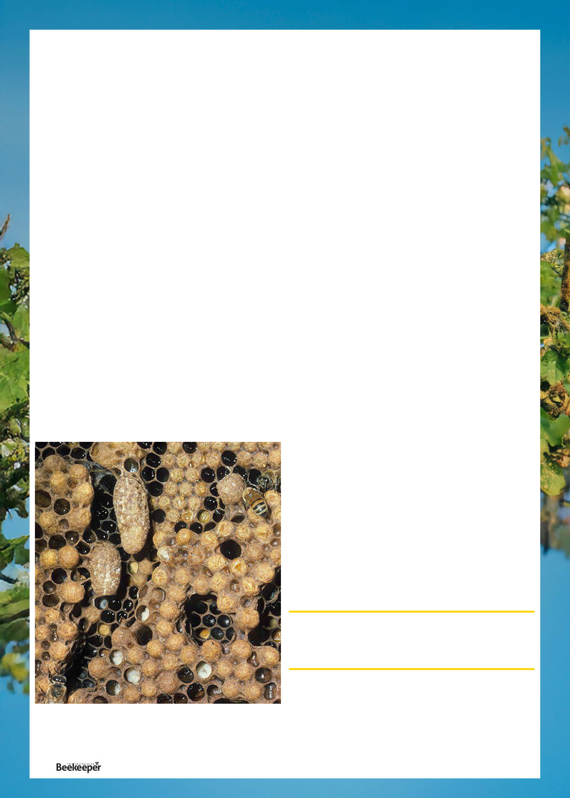

Changing daylength is a trigger for many biological processes
in plants and animals. Hives are more inclined to swarm in
spring than at any other time, but if all the stronger triggers are
in place, hives can swarm at other times of the year.
The swarming impulse is likely triggered well before we as
beekeepers can see any signs. It is fair to assume that if it is
spring and the bees have started rearing drones, then at least
some of the basic swarm impulse triggers are in place.
The first sign the beekeeper is likely to see is the production
of fresh ‘queen cups’ in the hive. There will almost always be
queen cups in the hive throughout the year, but the bees will
make new ones, usually around the bottom edges of the brood
nest. These cups are just the first step, a sign that at least some
of the triggers are in place. The cups will remain empty until the
hive commits itself to the swarming process. The presence of
fresh cell cups is not a sign that the hive is preparing to swarm,
just that many of the basic swarming triggers are in place. You
would expect to see fresh cell cups in most healthy hives during
the swarming season.
The next sign is when the queen cups contain eggs or larvae.
This is a sign that the hive is actually preparing to swarm. The
swarm clock starts ticking when the first egg is laid in a queen
cell cup. The swarm will leave between 8 and 14 days after
this first egg is laid.
By the time eggs appear in the queen cups, the workers will
have already started feeding the queen a reduced diet. This
dramatically reduces her egg laying and over the next week,
she loses 30–50% of her weight and shrinks in size, so she can
fly when the swarm departs.
The first queen cell will be capped after eight days. The hive
will have reduced foraging activity and scout bees will be scour-
ing the neighbourhood for potential sites for a new hive. Other
workers will be starting to gorge on honey. The hive is primed
and ready to swarm. Now they wait for the right day. Swarms
can depart as soon as the first cells are sealed, but they might
delay for up to six days.
Finally the swarm will leave the hive, with their old queen.
They will fly a short distance and collect together in a cluster
while the scout bees finalise their choice of a new home. This
swarm is called the prime swarm.
In some seasons, additional swarms will leave with virgin
(unmated) queens. These swarms are much smaller and are
called ‘cast’ or secondary swarms. In less favourable seasons,
the first virgin queen to emerge will tear down the remaining
queen cells. If two virgin queens meet, they will fight to the
death.
After the last swarm has left, a remaining virgin queen will
mate and take over as the laying queen. The worker popula-
tion of the parent hive will be replenished as the sealed brood
emerges, but it will take many weeks to recover the full pop-
ulation.
Beekeeping tips
Swarming is one of the big challenges for beekeepers. While
many of us got our first hive by collecting a swarm, it is not good
beekeeping practice to allow our hives to swarm, particularly
if we live in an urban area.
The way to limit swarming is to address the primary causes
of the swarming impulse. While the seasonal influence and
increasing daylight are out of our control, we can avoid over-
crowding, make sure the queen has room to lay and try to
maintain young queens in our hives.
Most importantly, we have to manage our hives more inten-
sively during the swarming season, checking that they have
space and looking for the signs that they are preparing to
swarm. You need to inspect your hives thoroughly every week
or ten days. If the swarming pressure is high, ten days is too
long – it can take just eight days to go from the first eggs being
laid in swarm cells until the swarm departs. So weekly checks
are the best bet.
Keep checking that the bees have enough space and the
queen has room to lay. There should be some empty combs
in the brood nest area. A two-deck hive with a young queen
laying at full capacity needs at least seven full-depth frames
available in the brood nest.
Destroying queen cells is not a reliable way of preventing
swarming. If there are sealed queen cells in the hive, the hive
can swarm at any time. I have seen a hive swarm shortly after
a beekeeper had destroyed all the queen cells. I have also seen
a lot of inexperienced beekeepers destroy queen cells after the
hive had swarmed. More often, the beekeeper fails to see one
of the cells, and Murphey’s Law says that will be the smallest
cell, likely to produce an inferior queen.
If you find swarm cells in your hive, the only
reliable way to stop the swarm is to split
the hive.
If you find swarm cells in your hive, the only reliable way to
stop the swarm is to split the hive. If you can find the queen,
you can make an artificial swarm. Move the hive to one side – it
doesn’t have to be far. Even turning it to face the other way is
enough. Put a new brood box with combs or foundation onto
the old hive site and put the queen and bees off several frames
• Swarm cells are usually found along the bottom edges of the
brood nest, but they can be anywhere. These were on an outside
edge. The top cell is recently sealed and this hive would likely
have swarmed within a few days.
22 |
| Vol. 127 | No. 4